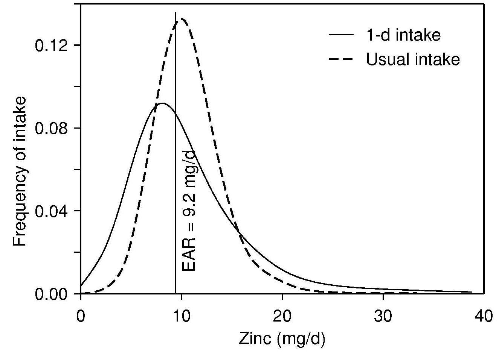

Figure 24c.4 Estimates of usual intake distribution for zinc for New
Zealand adults obtained from 24-hout recall data and
adjusted with replicate intake data using the refined NRC
method. The y-axis (frequency of intake) shows the
likelihood of each level of intake in the population. EAR,
Estimated Average Requirement. With permission.
from Gibson RS et al., (2003)
The Risk of Inadequate Zinc Intake in United States and New Zealand Adults.
Nutrition Today. 2003 Mar-Apr;38(2):63-70. doi:
10.1097/00017285-200303000-00010.